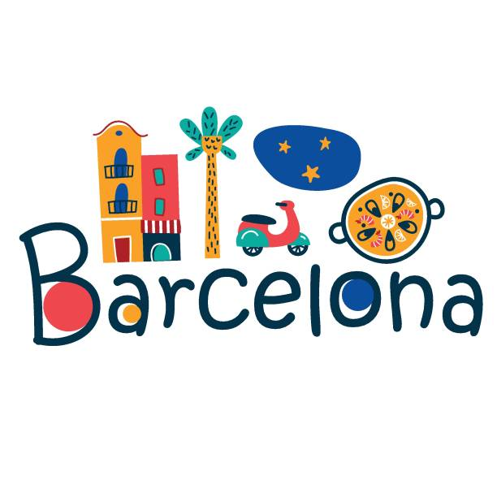
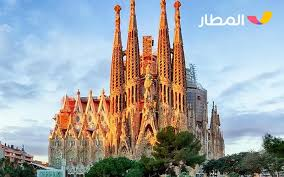
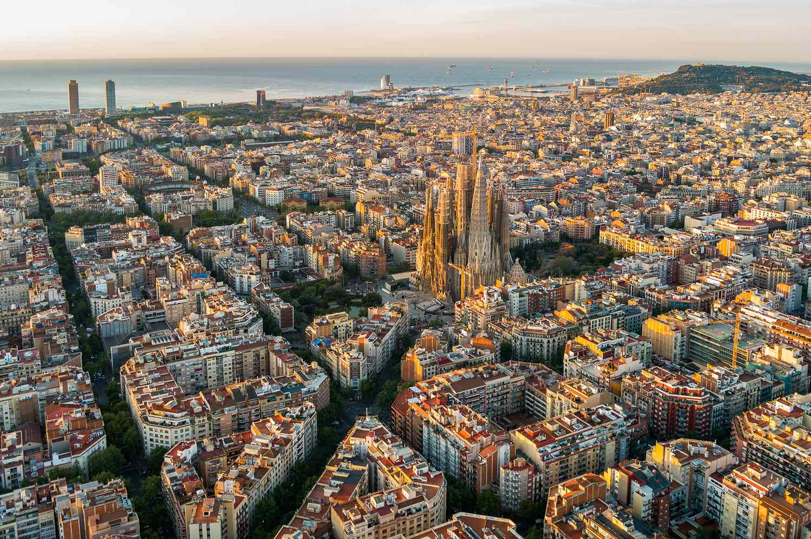
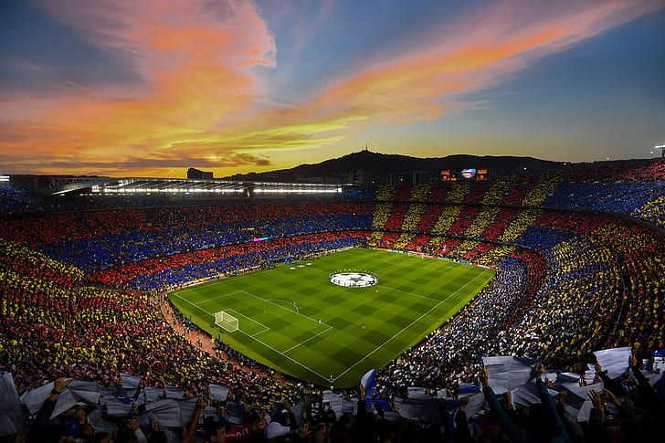

Barcelona is the vibrant, cosmopolitan capital of Catalonia in northeastern Spain, renowned for its unique Mediterranean character, stunning Antoni Gaudí architecture (like the Sagrada Família), and rich history. As Spain's second-largest city and a major economic hub, it combines Gothic charm with modern, avant-garde design.


